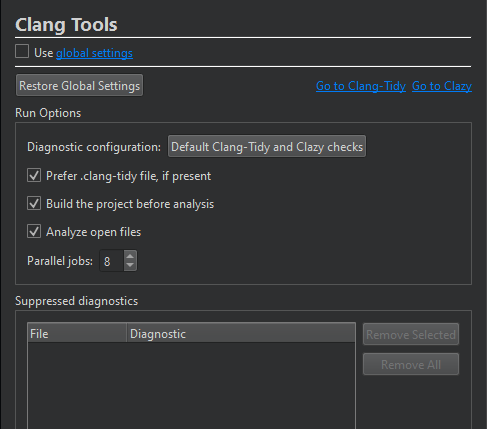

Specify Clang tools settings
To set Clang-Tidy and Clazy checks to run for the current project:
- Select Projects > Project Settings > Clang Tools.

- Deselect Use global settings.
- Specify preferences for the project.
- In Suppressed diagnostics, you can view the suppression list for a project and to remove diagnostics from it.
To restore the global settings, select Restore Global Settings. To view and modify the global settings, select the link in Use global settings.
To open the Clang-Tidy view, select Go to Clang-Tidy. To open the Clazy view, select Go to Clazy.
See also Configure Clang diagnostics, Analyze code with Clang-Tidy and Clazy, and Clang Tools.